# Week 6: Electronic Input Devices
##A. IR Transmit-Recieve:
I used 1K resistors to build the following circuit:
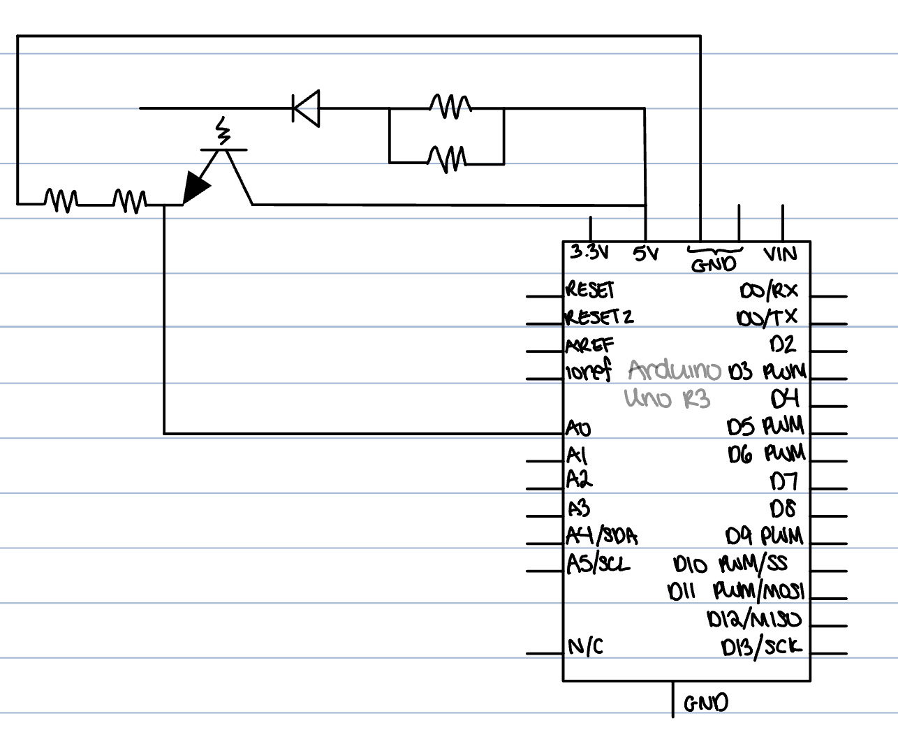
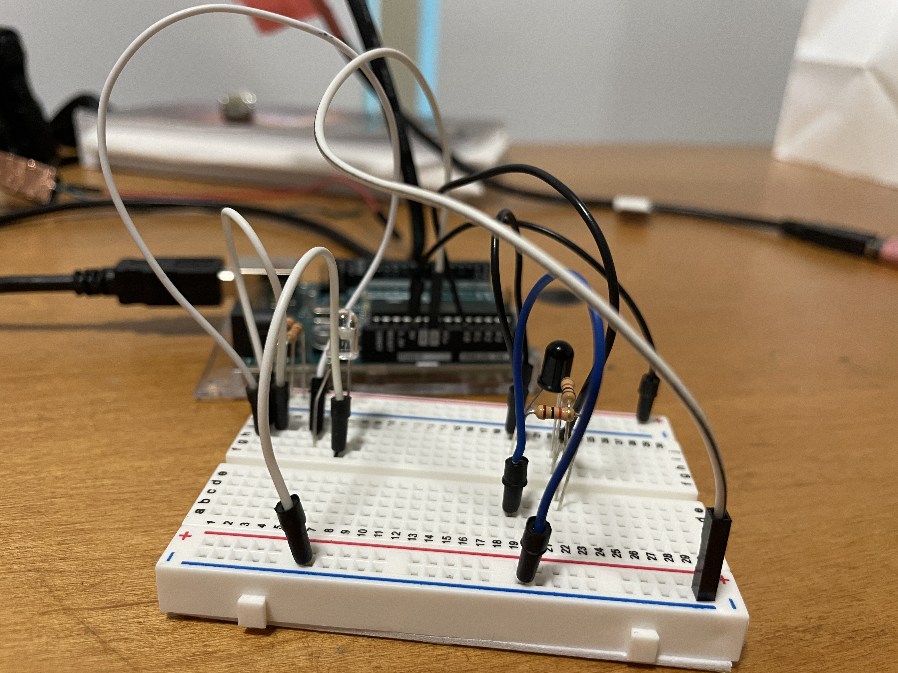
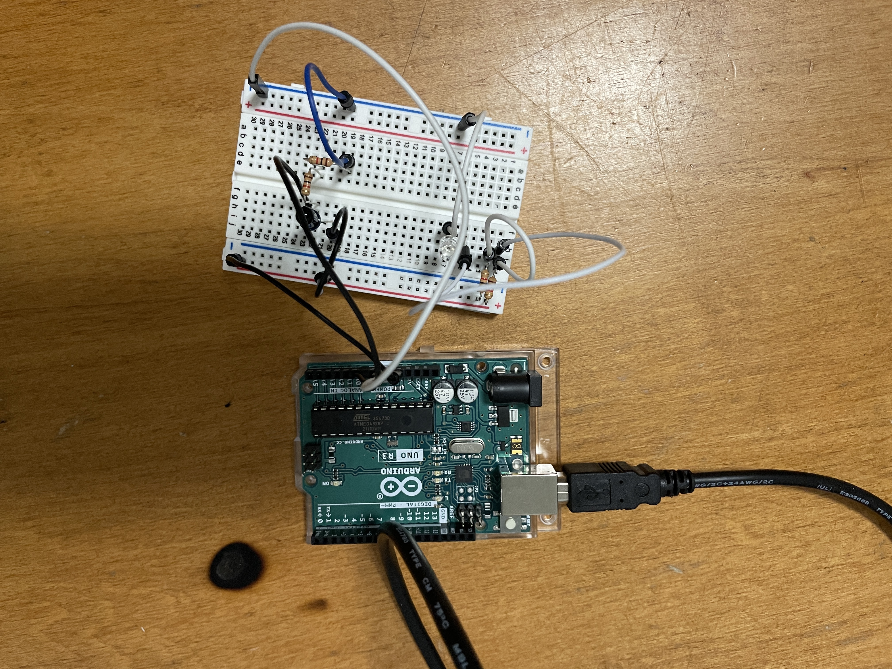
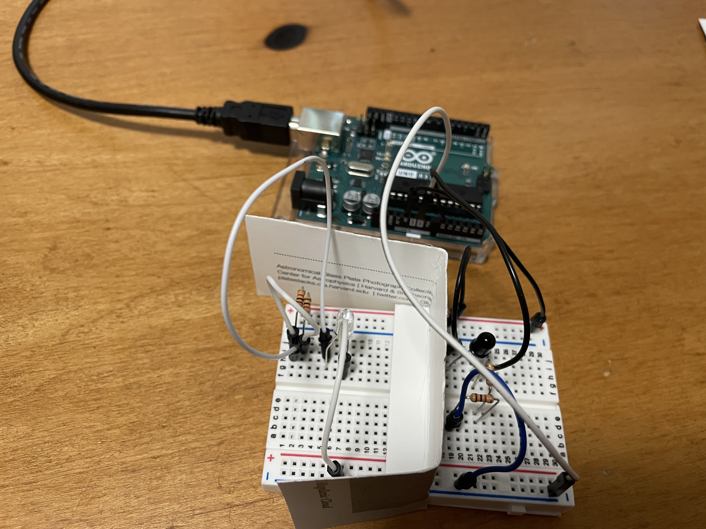
</br></br>
####Resultant Values: </br>
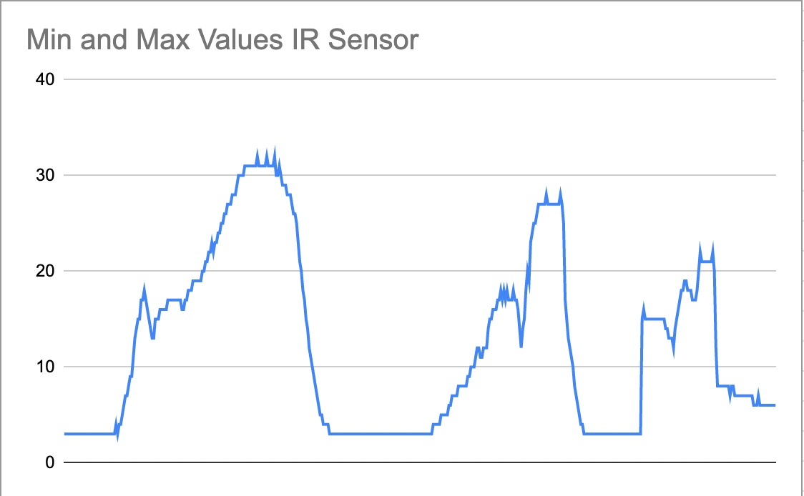
Min = 3</br>
Max = 32
</br>
</br>
I can control the range based one the amount of voltage I provide the sensor and the resistors I use in the circuit.
</br>
</br>
####Lowering the voltage:
- going from 5V to 3.3V
- leads to a smaller range
</br>
</br>
Min = 3 </br>
Max = 18
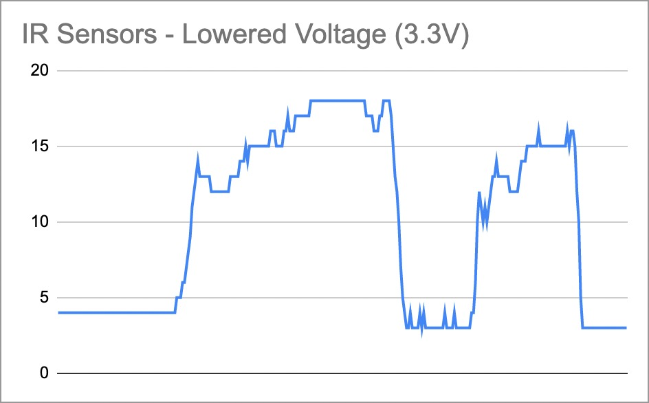
####Changing Resistors:
**Didn't have enough to do this part, will complete in lab
####Code:
Here is all the code used for this sensor:
<pre><code class="language-arduino">
void setup() {
Serial.begin(9600);
pinMode(A0, INPUT); // set A0 as the input pin
}
void loop() {
int a=analogRead(A0); // read the values from the IR reciever
Serial.println(a); // send them to the serial monitor
delay(100); // wait in between printings
}
</code></pre>
##B. Hand-Crafter Sensor:
###Capacitative Sensor:
I used 10K resistors to build the following circuit:
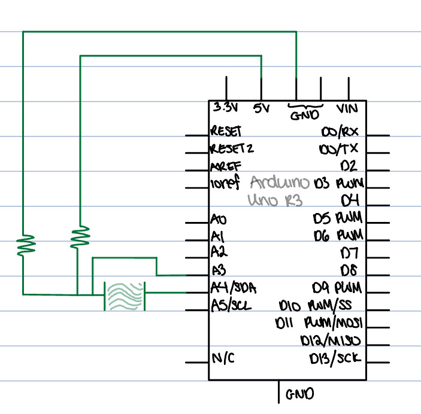
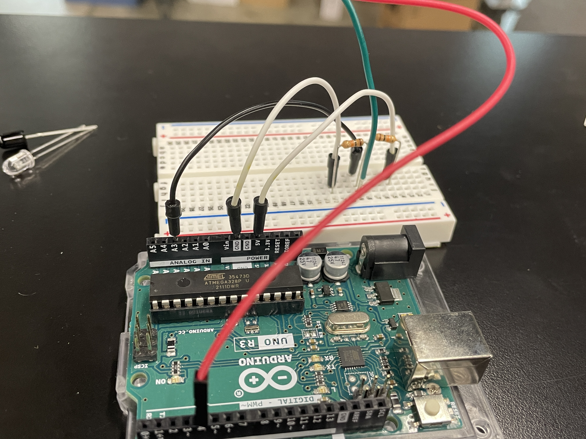
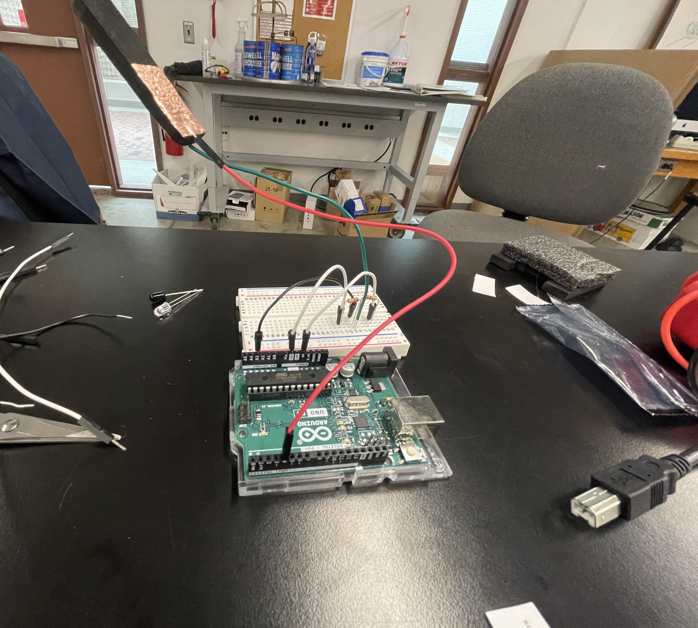
</br></br>
####Resultant Values: </br>
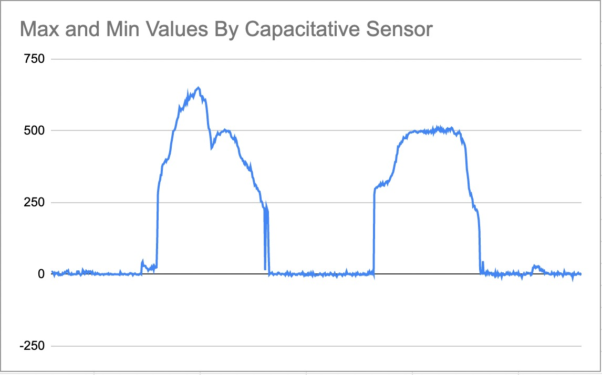
Min = -11</br>
Max = 650
</br>
</br>
I can control the range based one the amount of voltage I provide the sensor and the resistors I use in the circuit.
</br>
</br>
####Lowering the voltage:
- going from 5V to 3.3V
- leads to a greater range
</br>
</br>
Min = -4 </br>
Max = 1316
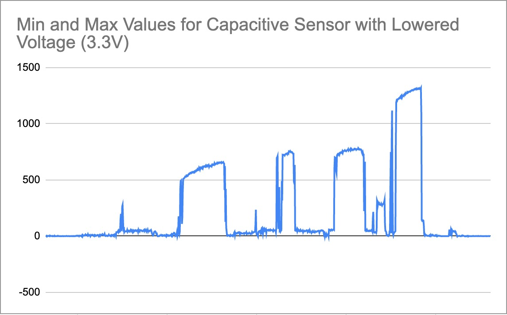
####Changing resistors:
- Going from 10K to 1K
- Led to a smaller range
</br>
</br>
Min = -17 </br>
Max = 109
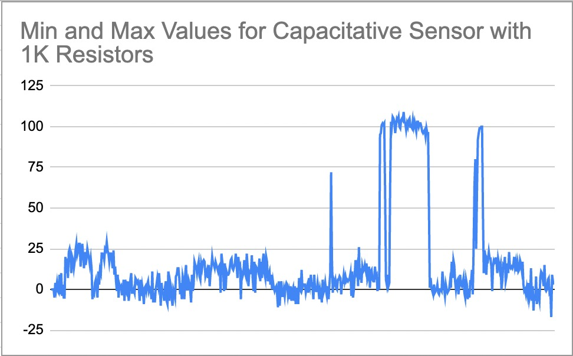
[home](../index.html).